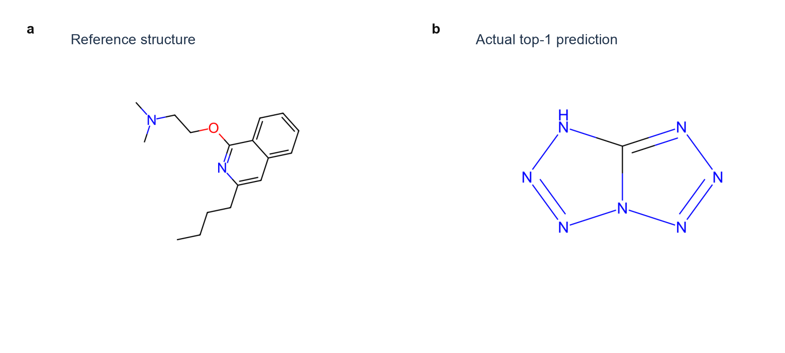

Structure generation: IR + Raman
Generate structures from molecular spectra.
Structure generation without a formula
The default OpenMolSpec route takes only calculated IR and Raman intensities. A shift estimator fitted on 11,632 connectivities predicts H and C shift counts and positions for the frozen structure decoder. On 24 development molecules it recovered 3 structures at rank 1. Updating the decoder output weights recovered 0/24, as did the frozen decoder with empty NMR inputs. On a separate 24-molecule confirmation set, estimated shifts recovered 2/24 at rank 1, 5/24 in the first three and 6/24 in the first five. The frozen baseline recovered 0/24 at all three cutoffs. All scores compare canonical molecular structures without stereochemistry.
from openmolspec.model import Vib2Mol
model = Vib2Mol(root=openspec_root, python=model_python)
result = model.predict({"ir": ir, "raman": raman}, top_k=5)
candidates = result["candidates"]
estimated_ppm = result["estimated_shifts_ppm"]
The example figure and original evaluation table below use the earlier empty-NMR decoder. The current benchmark excludes all 13,190 train and validation connectivities used for fitting the shift estimator.
Xinyu Lu’s released dual-spectrum model
The released VB-Mols MMM decoder takes IR, Raman and an independently supplied molecular formula. With 10 beams, the first candidate matched 24 of 24 sampled VB-Mols test structures and 0 of 24 sampled OpenMolSpec structures. Both panels use canonical SMILES with stereochemistry removed. Author’s implementation
from openmolspec.model import Vib2Mol
model = Vib2Mol(root=openspec_root, python=model_python)
result = model.predict_native(
{"ir": ir, "raman": raman}, formula=formula, checkout=vib2mol_checkout
)
What goes in
Field |
Meaning |
|---|---|
|
1024 intensity samples per visible channel, ordered 400→4000 cm⁻¹, using the checkpoint normalization. |
|
With IR and Raman alone, the software estimates H and C shifts and then decodes candidate structures. The native VB-Mols decoder requires a known molecular formula. |
What comes out
Field |
Meaning |
|---|---|
|
The decoder keeps the first occurrence of each valid canonical structure from 10 beams. The SDK returns beam order by default and also exposes the ITM rank. |
|
Generation and reranking scores are separate. No molecular formula is supplied. |
A real recorded example
Inspect the input, prediction and reference for the example below. Download the JSON for the complete numerical arrays and additional examples.

SVG · PNG · Full input/output JSON


Inspect the actual input and output fields
{
"reference": "CCCCc1cc2ccccc2c(OCCN(C)C)n1",
"raw_top_1": "N1=NN2N=NN=C2N1",
"canonical_top_1": "n1nc2[nH]nnn2n1",
"input": {
"ir": {
"length": 1024,
"first_values": [
0.012721044011414051,
0.012162876315414906,
0.011645566672086716,
0.010846862569451332
]
},
"raman": {
"length": 1024,
"first_values": [
0.026861174032092094,
0.022829052060842514,
0.02229130268096924,
0.0217174980789423
]
}
}
}
Actual evaluation results
Dataset / scope |
Model / variant |
Metric |
Value |
|---|---|---|---|
recorded sample |
recorded model |
valid_rate |
1 |
recorded sample |
recorded model |
exact_rate |
0 |
recorded sample |
recorded model |
examples |
4 |
Model and method
The openSpec model encodes the spectral channels with Vib2Mol. Generation uses beam search and molecular matching scores; retrieval compares embeddings, and candidate reranking uses the matching head.
Report top-k accuracy for generation, and Recall@k/MRR for ranking.
Reproduce
Notebook with executed figures · Quick Start
python -m openmolspec_bench run --workspace /path/to/OpenMolSpec \
--tasks vibrational.generation --limit 8 --output results/vibrational-generation-new.json
Call and adapt this model
from openmolspec.model import Vib2Mol
model = Vib2Mol(root='/path/to/portable-models',
python='/path/to/vibrational-env/bin/python')
result = model.predict(inputs)
Use the openSpec/Vib2Mol author training workflow for adaptation. Export aligned spectral/structure LMDBs, retain H/C references and normalization, and keep train/validation groups disjoint. Retrieval combines symmetric contrastive cross-entropy with matching cross-entropy; generation adds autoregressive molecular-token cross-entropy. Property regression uses the target transform and regression criterion from its training configuration. SDK classes expose inference; these training workflows run in the author implementation.
Source reports and SHA-256 fingerprints
smoke_vib2mol_20261115.json — SHA-256
2d847121c398071c68040623482a51118d1e20932779247b2eb72e071b8a8ae4
References
OpenMolSpec contributors. openSpec models and benchmark training workflows. Source archive, v1.0 (2026). Source
OpenMolSpec contributors. OpenMolSpec: Chemical spectroscopy datasets, models and learning workflows. Software release v1.0 (2026). Source
Yuan, M., Zou, Z. & Hu, W. QMe14S, A Comprehensive and Efficient Spectral Dataset for Small Organic Molecules. arXiv:2501.18876 (2025). Source
Zou, Z., Zhang, Y., Liang, L., Wei, M., Leng, J., Jiang, J., Luo, Y. & Hu, W. A deep learning model for predicting selected organic molecular spectra. Nature Computational Science 3, 957–964 (2023). doi:10.1038/s43588-023-00550-y. Source